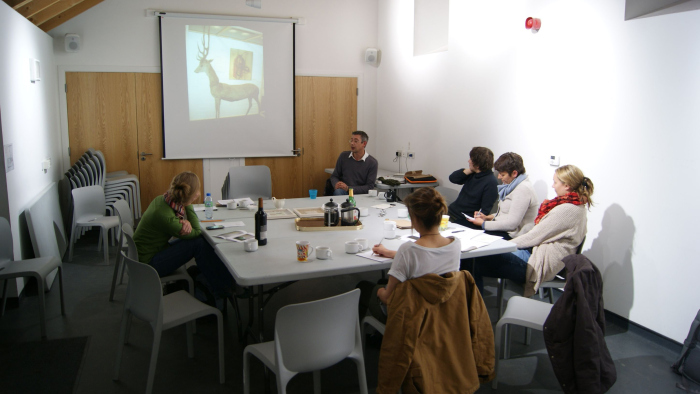

5-35 was an opportunity for artists based in rural Aberdeenshire to enter in to critical conversation around their work. The forum was based at the Scottish Sculpture Workshop, leading the conversations to be focused on a 'shop talk' or industry specific discourse.
"As the hangovers of discourse from Thursday night are now met by the traditional hangover of a sunny Saturday morning; I felt it was the right time to begin the online discourse that will hopefully supplement our critical forum 5- 35. The feedback that I have received so far seems good, focusing mainly on a constructive yet enjoyable time. I definitely felt this was a warm meeting of peers and hopefully friends, and was certainly not the critical Tomatina that a 'crit' can so often be. I'd like to thank Joanna, Josh, Laura and Alan for sharing their practices with us, and everyone else for attending and contributing. It would be great if this email stream [now blog] could now become a way of sharing the referrals that were maybe illegibly written down in the heat of conversation and the brilliant eureka moments that came to us in the car ride home. I'd like to start the ball rolling with a recommendation for no one in particular; an article in this month's Art Monthly called 'Paul O'kane on making art'. Its on the first page but sadly isn't available online. There is however a copy in the SSW library."
BB, Novemebr 2012